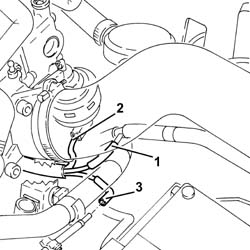
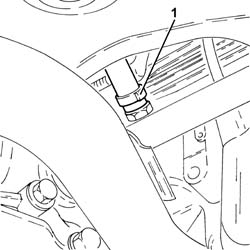
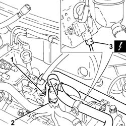
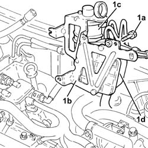
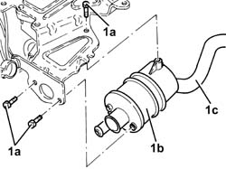

1080D34 ENGINE OIL VAPOUR SEPARATOR - R + R
- Path
- Procedures > 10 ENGINE UNIT > 1080 EXHAUST EMISSION CONTROL SYSTEM > 1080D CRANKCASE VAPOUR/GAS RECIRCULATION SYSTEM > 1080D34 ENGINE OIL VAPOUR SEPARATOR - R + R
- Kind
- repair procedure (removal / refitting; the operation number is the code)
- Applies to
- engines: 1.9 JTD 16V; all production periods
- Interactive page
- https://sloeber94.github.io/elrnDB-aGt/en/#/125001137
Applies to: engines: 1.9 JTD 16V; all production periods
 Removing
Removing
 Refitting
RefittingPosition the vehicle on the ramp
Ensure that the ignition key is in the OFF position, then disconnect the negative battery terminal (-).
Name | Connector | |
|---|---|---|
- | Battery | See A1B BATTERY ( BATTERY NEGATIVE ) |
Proceed with removal
- 1016A10 sound-proofing cover - r + r
Proceed with removal
Proceed with removal
Op. 7055B54 UNDER-ENGINE GUARD - R R
1. Disconnect the vacuum pipe from the three-way connector on the brake servo vacuum intake pipe.
2. Disconnect the vacuum pipe from the pneumatic valve on the throttle body.
Op. 1044B10 FUEL FILTER ASSEMBLY - R + R OR REPLACE
3. Disconnect the intermediate coupling for the vacuum pipe for the turbocharger vane position control actuator solenoid valve.

Applies to: engines: 1.9 JTD 16V; all production periods
1. Loosen the band and disconnect the condensation oil recovery pipe from the crankcase sump.

Applies to: engines: 1.9 JTD 16V; all production periods
1. Loosen the band and disconnect the oil vapour recovery pipe from the separator.
2. Loosen the band and disconnect the oil vapour recirculation pipe from separator.
3. Disconnect the electrical connection from the solenoid on the vacuum tank.
Name | Connector | |
|---|---|---|
3 | Butterfly casing solenoid valve | See L62 BUTTERFLY CASING SOLENOID VALVE |

Applies to: engines: 1.9 JTD 16V; all production periods
1. Undo the bolts (1a) and remove the bracket (1b) complete with oil vapour separator (1c) and vacuum reservoir (1d).

Applies to: engines: 1.9 JTD 16V; all production periods
1. At the bench, undo the bolts (1a) and remove the engine oil vapour separator (1b) complete with condensed oil recovery pipe (1c) from the mounting bracket.

Applies to: engines: 1.9 JTD 16V; all production periods
Refitting
RemovingPlace the oil vapour separator complete with condensed oil recovery pipe back in its seating on the mounting bracket and secure it with its bolts.
Place the bracket complete with oil vapour separator and vacuum reservoir back in its seating, then secure it with its bolts.
Connect the electrical connection to the solenoid on the vacuum reservoir.
Connect the oil vapour recirculation pipe to the separator and tighten the band.
Connect the oil vapour recovery pipe to the separator and tighten the band.
Connect the condensation oil recovery pipe to the crankcase sump and tighten the band.
Connect the intermediate coupling for the vacuum pipe for the turbocharger vane position control actuator solenoid valve.
Connect the vacuum pipe to the pneumatic valve on the throttle body.
Connect the vacuum pipe to the three-way connector on the brake servo vacuum intake pipe.
Proceed with refitting
Op. 1044B10 FUEL FILTER ASSEMBLY - R + R OR REPLACE.
Proceed with refitting
Op. 7055B54 UNDER-ENGINE GUARD - R R.
Proceed with refitting
- 1016A10 sound-proofing cover - r + r
.
Connect the negative (-) battery terminal
Remove the car from the ramps.